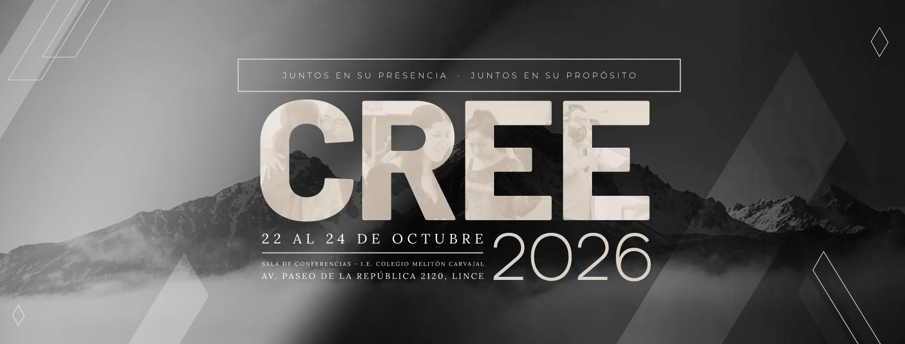

Juntos en Su presencia.
Juntos en Su propósito.
Una historia de fe que sigue escribiéndose.
Del 22 al 24 de octubre de 2026 nos encontramos en CREE para celebrar juntos el aniversario de nuestra iglesia.
Este espacio reunirá los recuerdos, las imágenes y las historias de ese encuentro. Una invitación a recordar lo vivido y a seguir caminando como familia.
El recuerdo sigue vivoDe fe.
De comunidad.
De una historia que continúa.
El recuerdo
sigue vivo.
Pronto compartiremos el video de CREE: un espacio para recordar lo que vivimos juntos.
El video de nuestro encuentro estará aquí.
La fe también
se vive juntos.
Nuestra comunidad es parte de esta historia. Aquí iremos compartiendo las imágenes de CREE.


Estas fotografías muestran a nuestra comunidad. La galería del encuentro CREE se añadirá próximamente.
Historias de
una misma fe.
Pronto compartiremos testimonios de quienes fueron parte de CREE. Cada historia tiene un lugar en nuestra familia.